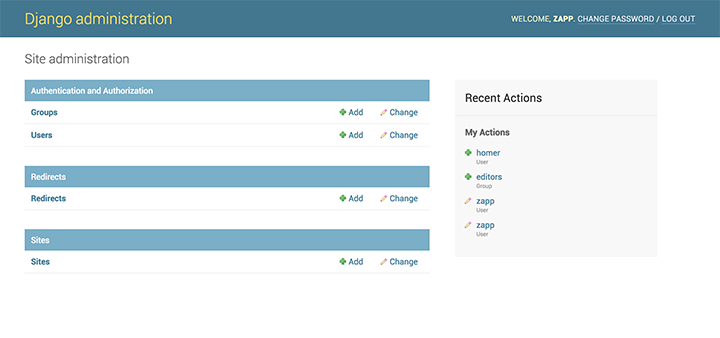
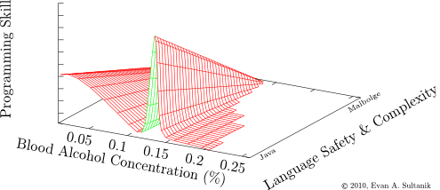

Hello World
CodeTengu Weekly 碼天狗週刊
本期 curators：
- @fukuball - ImFukuball - 坦然一個人吃燒肉、逛超市的真大叔
- @tzangms - Oceanic / 人生海海 - 我愛金貞敏
- @saiday - Imnotyourson - 捷運飲食推廣委員會
 @saiday
@saiday
Android - Handling Scrolls with CoordinatorLayout
Material design 中出色的滾動效果一直都廣受好評，這篇教學用 CoordinatorLayout 實作了三個相當熱門的效果 Floating Action Button meets Snackbar、可延展的 Toolbar、垂直視差捲動效果。都不需要 Animation codes 唷。
{kind=link}
延伸閱讀：
Android - Curved Motion – Part 1
如果你的 Android app 也有 master、detail 的頁面且特定的 view 在頁面切換之間位置、大小改變了，Android 5.0 (API level 21) 提供的動畫 motion patterns Curved Motion 是最好的解決方案。
Thoughts on iOS build tools
Fastlane release 了新的工具 gym，這對有使用 CI 的 iOS 開發者是一個值得關注的工具。作者在這篇文裡提到了 xcodebuild 及 shenzhen 的問題 (不曉得為甚麼漏了 xctool)。
gym 有著 fastlane 工具一貫的風格，夠高階超省事，最後會包裝簽名成最終的 ipa 檔。
PS. 現在還不是很穩定，但值得關注，之後在 CI 上跑 release 的 build 改成 gym 會方便很多。
A Practical Introduction to Functional Programming - Now with Swift!
When people talk about functional programming, they mention a dizzying number of 「functional」 characteristics...Ignore all that. Functional code is characterised by one thing: the absence of side effects. It doesn't rely on data outside the current function, and it doesn't change data that exists outside the current function. Every other 「functional」 thing can be derived from this property. Use it as a guide rope as you learn. – Mary Rose Cook on learning about functional programming
經典 Functional Programming 入門範例 Swift 版本。
延伸閱讀：
Lazy Initialization with Swift
我一直都是 Lazy initialzation 的腦粉， Swift 的 lazy modifier 的設計也太讚了，完全就是被當成一等公民。
 @tzangms
@tzangms
使用 Elasticsearch 及 Kibana 進行巨量資料搜尋及視覺化
據說是 Gogolook 資料分析第一把交椅所做的投影片，由於前一陣子公司內也建好了 ELK（Elasticsearch + Logstash + Kibana）開始在做一些資料分析跟視覺化，所以對這類主題頗有興趣，也想知道其他人怎麼做這件事。
像是在 CodeTengu Weekly 第一期中我也分享過了 Building Analytics at 500px，對這類主題有興趣也可以一併看看。

django-flat-theme
Django Admin 的 UI 一直以來幾乎都沒有變化，也很多人嘗試想去改造它，不過目前看到最簡單也漂亮的應該就屬這個 Django Flat Theme 了吧。
What's happening in frontend now?
上一期有分享了一篇前端工程師必須學會的現代化前端開發工具，這次也是類似主題，不過這次是投影片，用許多圖表，以及簡易的程式碼來說明，非常清楚。而且從一路從 jQuery、Backbone.js 講到了 React.js、Flux、Redux，前端翻新的速度實在是可怕啊。
 @fukuball
@fukuball
林軒田教授 Machine Learning Foundations 第一講 學習筆記
機器學習（Machine Learning）是一門很深的課程，要直接跳進來學習其實並不容易，因此系統性由淺而深的學習過程還是必須的。這一系列部落格文章計劃將 Coursera 上臺灣大學林軒田教授所教授的機器學習基石（Machine Learning Foundations）課程整理成心得，並對照林教授的投影片作說明，希望對有心學習 Machine Learning 的碼農們有些幫助。而第一講的內容基本上就是說明機器學習究竟是什麼、何時可以使用到機器學習，並由人的學習經驗推廣到機器如何學習，整理出機器學習的概觀。
Baidu explains how it’s mastering Mandarin with deep learning
今年八月，百度的資深研發工程師 Awni Hannun 在著名的 International Neural Network Society Conference on Big Data 發表了一個新的中文語音辨識機器學習模型，根據實驗結果可以達到 94% 的正確率，據稱是目前現有語音辨識系統中，中文辨識率最高的系統。本篇文章訪問了 Awni Hannun，從問答中可以一窺中文語音辨識機器學習目前的發展現況。
延伸閱讀：
Machine Learning Map: Choosing the right estimator
當我們要使用機器學習來解決一個問題的時候，其中一個最難的問題就是不知道要用什麼機器學習方法，機器學習實在有太多種演算法，也有很多工具可以使用。scikit-learn 這個 Python 著名的機器學習工具就提供了一個簡單的 flowchart，指引各位在機器學習之海迷途的碼農們一個方向，我們可以很簡單地依據 flowchart 的指示來界定我們目前遇到的問題需要用什麼機器學習方法來解決，大致上所有個問題可分成四大類，分類（classification）、分群（clustering）、迴歸（regression）、降維（dimensionality reduction），請各位碼農們看看機器學習地圖，看看自己現在要解決的問題要怎麼走吧！
Writing highly readable code
一個想要從低階碼農晉升到高階碼農的碼農朋友們的首要之務就是要讓寫出來的 Code 可以讓其他碼農朋友們也可以容易讀懂（Readable），本篇文章就展示了如何從擠成一團像坨屎的 PHP Code 重構（refector）成易讀易懂的好 Code。易讀易懂的 Code 主要有四大要點，Style、Structure、Naming、Comments 缺一不可，作者一一重構之後，有許多碼農技癢進行進一步重構，也都很有參考的價值，有興趣可以參閱一下延伸閱讀。
延伸閱讀：
Faker - a PHP library that generates fake data for you
寫應用程式的時候我們常常需要一些假資料來讓整個應用程式看起來煞有其事的樣子，也許參加 Hackathon 比賽或是 Demo 時這些假資料就是可以騙過評審的一些關鍵點，Faker 這個 PHP 套件就可以用來產生非常像樣的假資料，當需要假資料時就使用 Faker 吧！而且 Facker 還有在地化功能，只是中文資料目前沒有人貢獻。個人覺得 Faker 最酷的地方就是可以與 ORM 配合，並直接產生出有假資料的 model object，目前 Laravel 5.1 已經內建 Facker 了噢！（感謝 @Karl Li指正）
延伸閱讀：
Random Cool Stuff

Is the Ballmer Peak real?
傳說中血液酒精濃度在 0.12% - 0.14% 之間的工程師比平常更勇猛、更睿智、考試都考一百分，這個現象被稱為 Ballmer Peak。
這串討論很認真的想證明 Ballmer Peak 不只是一個笑話而是有所根據的。其中最讓人想要拿出來嘴砲的是 Ballmer Peak 的影響變數除了酒精濃度之外還有程式語言的複雜度。
由 @saiday 分享